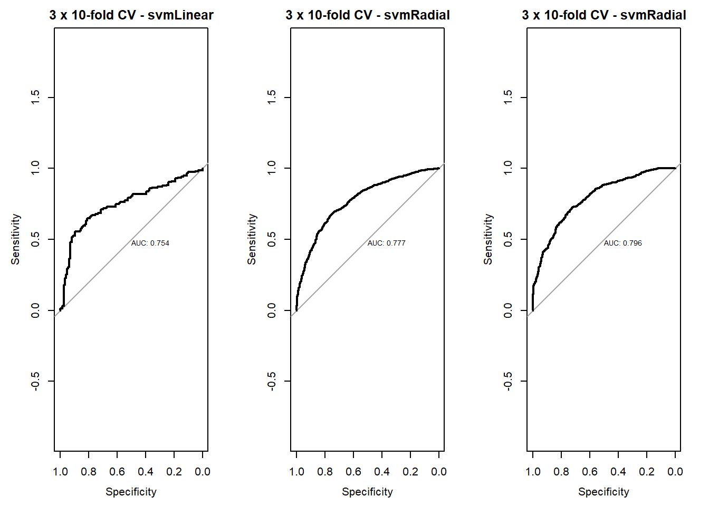

4.12 Assignment SVM
2020-05-12
Read data and packages
library(caret)
library(pROC)
# Get data set from UCI repository - Breast Cancer Coimbra
# - available from https://archive.ics.uci.edu/ml/datasets/Breast+Cancer+Coimbra
# Define the filename
filename <- "2.UploadedData/dataR2.csv"
# Load the CSV file from the local directory
dataset <- read.csv(filename, header=T)
# Define Classification as factor
dataset$Classification <- factor(dataset$Classification, levels=1:2, labels=c("Control", "Patient"))Holdout a validation set, by defining the indices of the training set
set.seed(523)
training.index <- createDataPartition(dataset$Classification, p=0.8, list=FALSE)
validation <- dataset[-training.index,]
dataset <- dataset[training.index,]Levels of the class
## [1] "Control" "Patient"Class distribution
proportions <- prop.table(table(dataset$Classification))
cbind(Frequency=table(dataset$Classification), Proportion=round(proportions*100,2))| Frequency | Proportion | |
|---|---|---|
| Control | 42 | 44.68 |
| Patient | 52 | 55.32 |
Statistical Summary
| Age | BMI | Glucose | Insulin | HOMA | Leptin | Adiponectin | Resistin | MCP.1 | Classification | |
|---|---|---|---|---|---|---|---|---|---|---|
| Min. :25.00 | Min. :18.37 | Min. : 60.00 | Min. : 2.540 | Min. : 0.5192 | Min. : 4.311 | Min. : 1.656 | Min. : 3.21 | Min. : 45.84 | Control:42 | |
| 1st Qu.:45.25 | 1st Qu.:23.00 | 1st Qu.: 85.00 | 1st Qu.: 4.389 | 1st Qu.: 0.9705 | 1st Qu.:12.555 | 1st Qu.: 5.468 | 1st Qu.: 7.11 | 1st Qu.: 271.35 | Patient:52 | |
| Median :60.50 | Median :28.02 | Median : 92.00 | Median : 6.121 | Median : 1.4282 | Median :22.396 | Median : 8.353 | Median :11.23 | Median : 477.90 | NA | |
| Mean :59.01 | Mean :27.95 | Mean : 98.65 | Mean :10.623 | Mean : 2.9147 | Mean :27.994 | Mean :10.153 | Mean :15.13 | Mean : 554.98 | NA | |
| 3rd Qu.:71.75 | 3rd Qu.:31.25 | 3rd Qu.:102.00 | 3rd Qu.:12.451 | 3rd Qu.: 2.9926 | 3rd Qu.:39.788 | 3rd Qu.:11.820 | 3rd Qu.:17.35 | 3rd Qu.: 728.66 | NA | |
| Max. :89.00 | Max. :38.58 | Max. :201.00 | Max. :58.460 | Max. :25.0503 | Max. :90.280 | Max. :38.040 | Max. :82.10 | Max. :1698.44 | NA |
Learn SVM with radial kernel (all features)
Summary
##
## Call:
## svm(formula = Classification ~ ., data = dataset)
##
##
## Parameters:
## SVM-Type: C-classification
## SVM-Kernel: radial
## cost: 1
##
## Number of Support Vectors: 78
##
## ( 36 42 )
##
##
## Number of Classes: 2
##
## Levels:
## Control Patientclassification plot for Glucose and Age
plot(svm.all,
data = dataset,
Glucose ~ Age, # para ver em 2D é necessário selecionar duas variaveis
svSymbol = 17,
dataSymbol = 20,
symbolPalette = c(2,3),
color.palette=grey.colors,
slice = list(
# Age = 59.01,
BMI = 27.95, # as restantes variaveis são fixadas para os seus valores médios
# Glucose=98.65,
Insulin=10.623, # mean value
HOMA=2.9147, # mean value
Leptin=27.994, # mean value
Adiponectin=10.153, # mean value
Resistin=15.13, # mean value
MCP.1=554.98)) # mean valueRun algorithms using 3 times 10-fold cross validation
metric <- "ROC"
control <- trainControl(method="repeatedcv", number=10,
summaryFunction=twoClassSummary,
classProbs=T,
savePredictions = TRUE, repeats = 3)
set.seed(7)
fit.svm.linear <- train(Classification ~ ., data=dataset,
method="svmLinear",
metric=metric,
trControl=control,
preProcess = c("center", "scale"),
tuneLength = 10)
set.seed(7)
fit.svm.radial <- train(Classification ~ ., data=dataset,
method="svmRadial",
metric=metric,
trControl=control,
preProcess = c("center", "scale"),
tuneLength = 10)Summarize accuracy of models
fit.models <- list(linear=fit.svm.linear, radial=fit.svm.radial)
results <- resamples(fit.models)
summary(results)##
## Call:
## summary.resamples(object = results)
##
## Models: linear, radial
## Number of resamples: 30
##
## ROC
## Min. 1st Qu. Median Mean 3rd Qu. Max. NA's
## linear 0.4 0.6500000 0.7758333 0.7657778 0.8875 1 0
## radial 0.5 0.8083333 0.8733333 0.8472222 0.9125 1 0
##
## Sens
## Min. 1st Qu. Median Mean 3rd Qu. Max. NA's
## linear 0.0 0.6 0.750 0.700 0.75 1 0
## radial 0.2 0.5 0.675 0.685 0.95 1 0
##
## Spec
## Min. 1st Qu. Median Mean 3rd Qu. Max. NA's
## linear 0.0 0.6000000 0.8 0.7166667 0.8333333 1 0
## radial 0.2 0.6666667 0.8 0.7622222 0.8333333 1 0ROC curves for models
par(mfrow=c(1,2))
rocs <- lapply(fit.models, function(fit){plot.roc(fit$pred$obs,fit$pred$Patient,
main=paste("3 x 10-fold CV -",fit$method),
debug=F, print.auc=T)})Compare accuracy of models
Inspect model linear
## Support Vector Machines with Linear Kernel
##
## 94 samples
## 9 predictor
## 2 classes: 'Control', 'Patient'
##
## Pre-processing: centered (9), scaled (9)
## Resampling: Cross-Validated (10 fold, repeated 3 times)
## Summary of sample sizes: 85, 85, 83, 84, 84, 85, ...
## Resampling results:
##
## ROC Sens Spec
## 0.7657778 0.7 0.7166667
##
## Tuning parameter 'C' was held constant at a value of 1| parameter | class | label |
|---|---|---|
| C | numeric | Cost |
Inspect model radial
## Support Vector Machines with Radial Basis Function Kernel
##
## 94 samples
## 9 predictor
## 2 classes: 'Control', 'Patient'
##
## Pre-processing: centered (9), scaled (9)
## Resampling: Cross-Validated (10 fold, repeated 3 times)
## Summary of sample sizes: 85, 85, 83, 84, 84, 85, ...
## Resampling results across tuning parameters:
##
## C ROC Sens Spec
## 0.25 0.7908333 0.7533333 0.6133333
## 0.50 0.8015000 0.6650000 0.7088889
## 1.00 0.8098889 0.6500000 0.7500000
## 2.00 0.8458333 0.6766667 0.7544444
## 4.00 0.8472222 0.6850000 0.7622222
## 8.00 0.8148889 0.6500000 0.7433333
## 16.00 0.8002222 0.6516667 0.7588889
## 32.00 0.8057222 0.6466667 0.7700000
## 64.00 0.7797778 0.6283333 0.7488889
## 128.00 0.7604444 0.6366667 0.7377778
##
## Tuning parameter 'sigma' was held constant at a value of 0.09382649
## ROC was used to select the optimal model using the largest value.
## The final values used for the model were sigma = 0.09382649 and C = 4.| parameter | class | label |
|---|---|---|
| sigma | numeric | Sigma |
| C | numeric | Cost |
ROC complexity for models

Improve Radial
myGrid <- expand.grid(C = c(1,2,4,8), sigma=0.09382649)
set.seed(7)
fit.svm.radial.tune <- train(Classification ~ ., data=dataset,
method="svmRadial",
metric=metric,
trControl=control,
tuneGrid = myGrid)
# ROC complexity for models
print(fit.svm.radial.tune)## Support Vector Machines with Radial Basis Function Kernel
##
## 94 samples
## 9 predictor
## 2 classes: 'Control', 'Patient'
##
## No pre-processing
## Resampling: Cross-Validated (10 fold, repeated 3 times)
## Summary of sample sizes: 85, 85, 83, 84, 84, 85, ...
## Resampling results across tuning parameters:
##
## C ROC Sens Spec
## 1 0.8098889 0.6483333 0.7366667
## 2 0.8458333 0.6950000 0.7677778
## 4 0.8472222 0.6900000 0.7688889
## 8 0.8148889 0.6583333 0.7366667
##
## Tuning parameter 'sigma' was held constant at a value of 0.09382649
## ROC was used to select the optimal model using the largest value.
## The final values used for the model were sigma = 0.09382649 and C = 4.Summarize accuracy of models
fit.models <- list(linear=fit.svm.linear,
radial=fit.svm.radial,
tune=fit.svm.radial.tune)
results <- resamples(fit.models)
summary(results)##
## Call:
## summary.resamples(object = results)
##
## Models: linear, radial, tune
## Number of resamples: 30
##
## ROC
## Min. 1st Qu. Median Mean 3rd Qu. Max. NA's
## linear 0.4 0.6500000 0.7758333 0.7657778 0.8875 1 0
## radial 0.5 0.8083333 0.8733333 0.8472222 0.9125 1 0
## tune 0.5 0.8083333 0.8733333 0.8472222 0.9125 1 0
##
## Sens
## Min. 1st Qu. Median Mean 3rd Qu. Max. NA's
## linear 0.00 0.6 0.750 0.700 0.75 1 0
## radial 0.20 0.5 0.675 0.685 0.95 1 0
## tune 0.25 0.5 0.750 0.690 0.80 1 0
##
## Spec
## Min. 1st Qu. Median Mean 3rd Qu. Max. NA's
## linear 0.0 0.6000000 0.8 0.7166667 0.8333333 1 0
## radial 0.2 0.6666667 0.8 0.7622222 0.8333333 1 0
## tune 0.2 0.6166667 0.8 0.7688889 1.0000000 1 0ROC curves for models
par(mfrow=c(1,3))
rocs <- lapply(fit.models, function(fit){plot.roc(fit$pred$obs,fit$pred$Patient,
main=paste("3 x 10-fold CV -",fit$method),
debug=F,
print.auc=T)})
Compare accuracy of models

Make predictions
par(mfrow=c(1,1))
# Estimate skill of RF on the validation dataset
predictions.prob <- predict(fit.svm.radial.tune, validation, type="prob")
predictions <- predict(fit.svm.radial.tune, validation, type="raw")
confusionMatrix(predictions, validation$Classification)## Confusion Matrix and Statistics
##
## Reference
## Prediction Control Patient
## Control 7 1
## Patient 3 11
##
## Accuracy : 0.8182
## 95% CI : (0.5972, 0.9481)
## No Information Rate : 0.5455
## P-Value [Acc > NIR] : 0.007436
##
## Kappa : 0.6271
##
## Mcnemar's Test P-Value : 0.617075
##
## Sensitivity : 0.7000
## Specificity : 0.9167
## Pos Pred Value : 0.8750
## Neg Pred Value : 0.7857
## Prevalence : 0.4545
## Detection Rate : 0.3182
## Detection Prevalence : 0.3636
## Balanced Accuracy : 0.8083
##
## 'Positive' Class : Control
## plot ROC
plot.roc(validation$Classification,
predictions.prob$Patient,
print.auc=T,
axes=F,
main=paste("3 x 10-fold CV -",fit.svm.radial.tune$method),
debug=F)
axis(1)
axis(2)